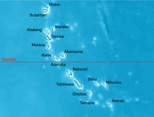

Tarawa is an atoll and the capital of the Republic of Kiribati, in the central Pacific Ocean. It comprises North Tarawa, which has much in common with other, more remote islands of the Gilberts group; and South Tarawa, which is home to 50,182 as of 2010 – half of the country’s total population. The atoll is best known by outsiders as the site of the Battle of Tarawa during World War II. Tarawa has a large lagoon, 500 square kilometres (193 sq mi) total area, and a wide reef. Although naturally abundant in fish and shellfish of all kinds, marine resources are being strained by the large and growing population. Drought is frequent, but in normal years rainfall is sufficient to maintain breadfruit, papaya and banana trees as well as coconut and pandanus.